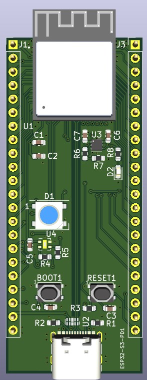

A custom ESP32-S3 development board PCB with controlled-impedance USB Type-C differential routing for reliable high-speed data.

This project involves designing a custom ESP32-S3 development board PCB with a USB Type-C interface, implementing controlled impedance routing for high-speed differential data lines. The goal was to ensure reliable USB 2.0 communication and proper power delivery through USB-C, while optimizing the PCB layout for RF performance and antenna clearance.
The PCB was designed in KiCad with a 4-layer stack-up to achieve controlled impedance. USB D+ and D− lines were routed as differential pairs with 90 Ω ±10% impedance, matched within 0.13 mm length tolerance. The Type-C CC1/CC2 pins were connected via 5.1 kΩ pull-down resistors to signal device mode.
When connected via USB-C, the board powers the ESP32-S3 and establishes USB CDC/JTAG communication. The board can be used for firmware flashing, debugging, and running applications that require USB data transfer.
Impedance verification was done using the PCB manufacturer's impedance control service. The board successfully enumerated as a USB device on Windows/Linux and could be programmed via esptool.py. RF range performance was unaffected by the USB traces due to proper antenna isolation.
The custom ESP32-S3 PCB achieved stable USB-C communication with correct impedance matching. This design serves as a robust platform for IoT projects requiring high-speed USB connectivity and RF performance.